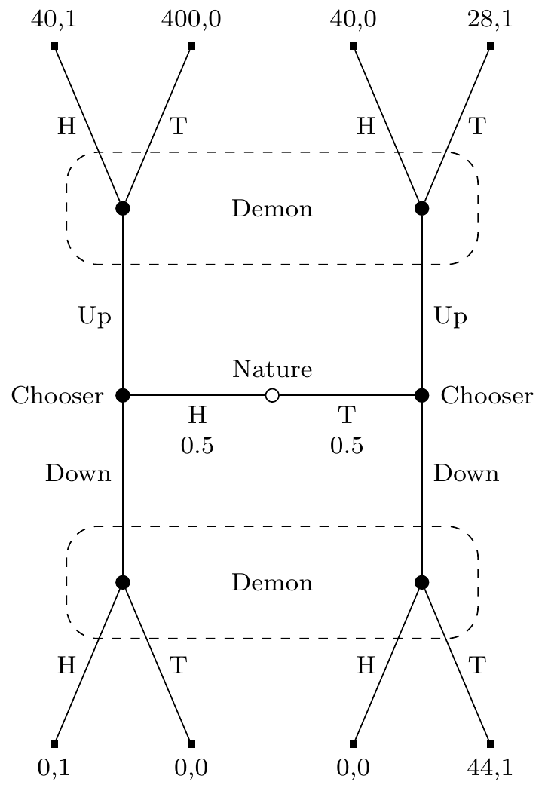

Appendix D — Signals and Outcomes
In Section 4.3, I said there was another case where EDT left one with less money, and where this didn’t rely on having different evidence in the high return case to the low return case. This appendix describes such a case. It is a version of a signalling game of the kind introduced by Lewis (1969). And in particular it’s a version of the broadly adversarial kinds of signalling games that are central to the plot of Cho & Kreps (1987). It will involve a human Chooser, and a Demon who is excellent at predictions, and the game will have three stages.
At the first stage a fair coin is flipped, and the result shown to Chooser, but not to Demon. At the second stage, Chooser will choose Up or Down, and the choice will be publicly announced. At the third stage, Demon will try to guess what the coin showed. Demon knows the payoff table I’m about to show you, and is arbitrarily good at predicting Chooser’s strategy for what to do given how the coin appears. This prediction is causally independent of Chooser’s choice, but Demon’s guess is not independent; it could be affected by the choice. The payoffs to each player are a function of what happens at each of the three steps, and are given by table Table D.1. (The payoffs here are all in utils.)
| Coin | Chooser | Demon | Chooser Payoff | Demon Payoff |
|---|---|---|---|---|
| H | U | H | 40 | 1 |
| H | U | T | 400 | 0 |
| H | D | H | 0 | 1 |
| H | D | T | 0 | 0 |
| T | U | H | 40 | 0 |
| T | U | T | 28 | 1 |
| T | D | H | 0 | 0 |
| T | D | T | 44 | 1 |
Figure D.1 shows the game they are playing in tree form. We start at the middle, then move left or right depending on the coin flip, up or down depending on Chooser’s choice, and at one or other angle depending on Demon’s choice. Demons’s payoffs are just as you’d expect - they get rewarded iff they figure out how the coin landed. Chooser’s payoffs are more complicated, but the big things to note are the huge payout if they get to the top-left and Demon does not make a correct prediction, and the generally poor payouts for choosing Down.
Demon predicts Chooser’s strategy. That is, Demon predicts Chooser’s plan about what to do if the coin lands Heads and what to do if the coin lands Tails, before the game starts. They make their guess about how the coin landed after seeing Chooser’s actual choice, and updating their prior beliefs (about both the coin and Chooser) with this information. If they predict that Chooser will do the same thing however the coin lands, they will have no useful information about the coin, so they will flip their own coin to make a guess. In that case it will be 50/50 whether Demon says Heads or Tails. Also, if Demon is surprised by what Chooser does, i.e., if they had predicted Chooser would do one thing however the coin lands but Chooser does the other thing, Demon will also flip their own coin to make a guess.1 Finally, Demon’s predictions are arbitrarily accurate. For simplicity, I’ll assume Demon is correct with probability 1, though it doesn’t matter if you allow for probability \(\varepsilon\) that Demon gets it wrong.
1 A key part of the discussion in Cho & Kreps (1987) is that in some cases we can say substantive things about what a player will do if they are surprised in this sense. But Figure D.1 is not such a case.
Now I want to analyse what Chooser will do if they follow EDT. It should be fairly clear that if the coin lands Heads, Chooser should say Up. The worst possible return from Up is 40, the best possible return from Down is 0. So that’s what any theory would recommend, and Chooser will do that whether or not they follow EDT. Indeed, this is so clear that we should assume Demon will predict that Chooser will play Up if the coin lands Heads. So what happens if the coin lands Tails? There are four possibilities here: the two things Chooser might do crossed with the two predictions Demon might make. The expected return to Chooser in these four possibilities is given in Table D.2.
| PUp | PDown | |
|---|---|---|
| Up | 34 | 40 |
| Down | 18 | 44 |
The numbers in Table D.2 aren’t entirely obvious; I’ll spell out how I got them.
- If Demon predicts Up (i.e., Demon predicts that Chooser will adopt a strategy that involves playing Up if the coin lands Heads) Demon will flip a coin. And they’ll do that whatever Chooser does. That’s because they’ll either get no information (if Chooser plays Up), or will be surprised (if Chooser plays Down). So Chooser will get the average of lines 5 and 6 in Table D.1 if they play Up, and the average of lines 7 and 8 if they play Down.
- If Demon predicts Down, and Chooser plays Up, Demon will think (falsely) that the coin must have landed Heads, since Demon will have predicted that Chooser will only say Up if Heads. So Demon will say Heads. So we’ll definitely be at line 5 of Table D.1, where Chooser gets 40.
- If Demon predicts Down, and Chooser plays Down, Demon will think (correctly) that the coin must have landed Tails. So Demon will say that, and we’ll be at line 8 of Table D.1.
In a decision problem like Table D.2, EDT says that all that matters is which of the top-left and bottom-right cells is largest. In this case, it’s the bottom-right, so EDT says to play Down. That isn’t absurd in this case; it gets the best possible payout of 44. So that’s our analysis of the game for EDT: Chooser plays Up if Heads, Down if Tails, gets 40 if Heads and 44 if Tails (plus/minus a small amount in expectation if Demon has \(\varepsilon\) chance of being wrong), and on average gets 42.
GDT does not give any clear verdict about what to do in Table D.2; it says either Up or Down is permissible. So following GDT doesn’t mean you’ll do better than EDT in this game; you might do exactly as well as EDT. But all it takes to get a “Why Ain’cha Rich?” argument going is to show that one theory does better than EDT. And the version of CDT that Dmitri Gallow (2020) endorses implies that one should play Up in Table D.2. So someone following his theory will play Up however the coin lands. So Demon will always flip a coin to decide what to do. So all of the top four outcomes in Figure D.1 are equally likely, and Chooser will on average get a return of 127. Since 127 > 42, that means that on average if Chooser follows Gallow’s theory, they will on average be much richer than if they follow EDT. So if “Why Ain’Cha Rich?”, they show that EDT should be rejected in favour of Gallow’s theory.
Ian Wells (2019) has earlier offered an example where EDT predictably does worse than (all versions of) CDT. His case involves a two-step game, where the EDTer will, at step 2, make a decision that everyone, whether they believe in CDT or EDT or any other plausible theory, think is bad from the perspective of the player at step 1. At round 1 the players can pay to tie their hands at round 2, and the EDTer will make this payment. (As would the CDTer who thinks they will become an EDTer before round 2 starts.) Arif Ahmed (2020) responds that this is an unfair criticism. In Wells’s cases, he says, the EDT and CDT deciders are not in equivalent situations in round one. The EDTer knows that they will use EDT in later rounds, and the CDTer knows that they will use CDT in later rounds. So they have different evidence about what will happen at some later time in a way that’s relevant to their current decision, so it’s not a like-for-like comparison between CDT and EDT at the first stage.
I don’t think this is a fair criticism of Wells, or a successful defence of EDT. But even if you think Ahmed has shown how EDT survives Wells’s criticisms, his response doesn’t work here. Chooser will definitely choose Up if the coin lands Heads, whether they follow EDT, Gallow’s theory, or any remotely plausible theory. And this is common knowledge. Demon knows this, and Chooser knows that Demon knows it, and so on. The only difference is that if Chooser follows EDT, they will play Down if Tails. And that’s good as far as it goes; they’ll probably get the highest possible payoff they can get at that point. More importantly for this debate, they will have the same subjective states if Tails is true whether they follow EDT, Gallow’s theory, or anything else. They will believe that they would have played Up if Heads, and that the Demon would have predicted that. So the different choices they make if the coin lands Tails can’t be traced back to differences in their subjective states. So the complaint that Ahmed makes about Wells’s examples can’t be made here (even setting aside the question of whether it is a fair complaint). Nonetheless, the EDTer ends up with less money in the long run than the follower of Gallow’s theory when playing this game.